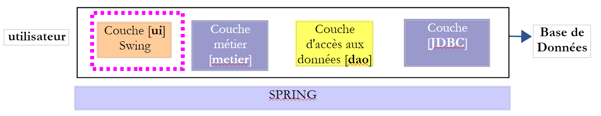
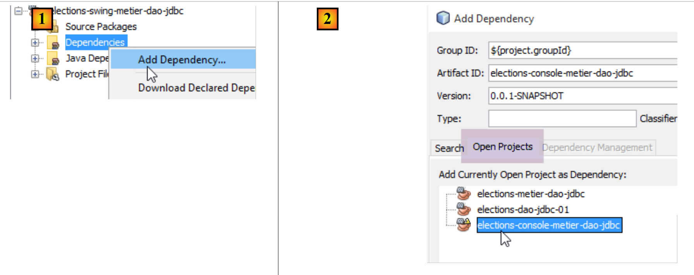
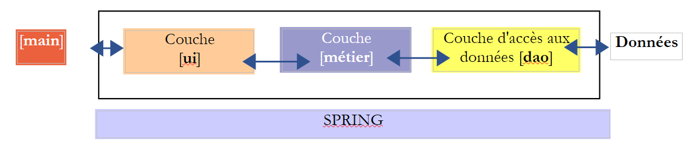
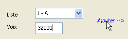
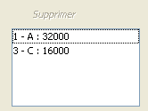

10. [TD]: Implementação da camada [ui] com uma interface Swing
Palavras-chave: arquitetura multicamadas, Spring, injeção de dependências, biblioteca de componentes Swing.
 |
10.1. Support
 |
Na camada [UI], pretende-se criar uma interface gráfica Swing. O NetBeans dispõe de uma ferramenta [Matisse] para criar estas interfaces Swing, que é superior à que o Eclipse pode oferecer. As interfaces Swing tendem a ser substituídas por interfaces JavaFx. O NetBeans e o Eclipse utilizam a mesma ferramenta para criar estas últimas. Assim, se criarmos interfaces JavaFx, podemos manter o Eclipse em toda a arquitetura em camadas.
O NetBeans pode abrir qualquer projeto Maven. Vamos, portanto, utilizar o projeto Maven anterior e adicionar-lhe uma interface Swing. No [2], carregamos (Arquivo / Abrir projeto) os projetos Maven das três camadas que criámos com o Eclipse. Em seguida, compilamos os seus binários [3]. As opções [Build] e [Clean and Build] compilam o binário do projeto ao qual são aplicadas. Estes binários são colocados na pasta [target] [4-5] do projeto:
 |
A opção [Clean] elimina esta pasta [target]. A opção [Build] recria-a. A experiência mostra que, quando surgem problemas inesperados, a primeira coisa a fazer é executar um [Clean and Build] no projeto para garantir que se está a trabalhar com a versão mais recente do mesmo. Isto é particularmente necessário quando se têm ficheiros de configuração que, se forem alterados, não provocam uma recompilação automática ao executar o projeto. É então necessário forçar essa recompilação através de um [Clean and Build] para que as suas novas versões sejam instaladas na pasta [target].
10.2. Funcionamento da aplicação
Voltemos à arquitetura global da aplicação [Elections]:
 |
Vamos agora centrar-nos numa nova implementação da camada [ui]. A única implementação realizada até ao momento é uma interface de consola. Vamos agora criar uma interface gráfica.
O utilizador terá à sua disposição a seguinte interface para interagir com a aplicação [Elections]:
 |
 |
A interface gráfica encontra-se na camada [ui]. É ela que interage com o utilizador.
- No arranque, a aplicação de consola [main] instancia as três camadas da aplicação através do Spring. Isto é feito antes mesmo de a interface gráfica ficar visível. Ainda nesta fase de inicialização, as informações que caracterizam a eleição (número de lugares a preencher, limiar eleitoral, listas concorrentes) são solicitadas à camada [dao]. Se esta fase de inicialização falhar (por exemplo, impossibilidade de aceder aos dados), é exibida uma mensagem de erro na consola e a interface gráfica não é apresentada.
- Se a leitura dos dados decorrer sem problemas, a interface gráfica é apresentada com as seguintes informações (ver captura de ecrã acima):
- o número de lugares a preencher em (2)
- o limiar eleitoral em (3)
- os identificadores e nomes das listas de candidatos em (4)
- o utilizador atribui então a cada lista candidata o seu número de votos através dos campos 4 (id - nome), 5 (votos) e 6 (para adicionar).

- pode-se então utilizar o link (10) para calcular os lugares:

- o link [Enregistrer] (12) permite registar os resultados na fonte de dados.
10.3. A classe de implementação [ElectionsSwing] da camada [ui]
10.3.1. O projeto NetBeans
Nota: O parágrafo 22.4 indica como obter o NetBeans.
O projeto NetBeans final da aplicação terá a seguinte forma: [1]. Compile-o seguindo os passos [2-5]:
 |
 |
Certifique-se de que o projeto está configurado para ser compilado pelo JDK 1.8 [1-6]:
 |
10.3.2. Configuração do Maven
O novo projeto [elections-swing-metier-dao-jdbc] irá basear-se no projeto anterior [elections-console-metier-dao-jdbc]. Para tal, adiciona-se uma dependência Maven da seguinte forma [1-3]:
 |
 |
10.3.3. Construção da interface gráfica
Para criar a interface gráfica, podemos proceder da seguinte forma:
 |
 |
- [1]: adição de um objeto ao pacote [elections.ui.service]
- [2]: seleção da opção [JFrame Form] na categoria [Swing GUI Forms]
 |
- [4]: atribuir um nome à classe
- [5]: o pacote da classe.
- Concluir o assistente.
- [6]: a classe gerada
 |
- [7]: a classe [AbstractElectionsSwing] no modo [Design]
- [8]: o separador [Navigator] que apresenta a árvore [9] dos componentes da janela
- [10]: o separador [Properties] que apresenta as propriedades do componente [jFrame] selecionado em [9]
 |
- [11]: o [JFrame] é um contentor de componentes. Estes podem ser dispostos no contentor de acordo com várias regras de posicionamento denominadas layouts. Aqui, escolhemos o layout [Free Design] [14], que permite posicionar os componentes livremente no contentor.
Encontramos os componentes na barra de ferramentas denominada Palette:
 |
- [1]: a paleta
- [2]: um componente JLabel é colocado no contentor de componentes
- ao clicar com o botão direito do rato sobre ele, tem-se acesso a várias propriedades: o seu nome [4], o seu texto [3] ou ainda os seus gestores de eventos [5]. Utilizamos o [3] para definir o texto [6].
 |
- [1]: o separador [Properties] do componente [JLabel] dá acesso às propriedades deste: o seu posicionamento horizontal [2], vertical [3], o tipo de letra do texto [4] e o texto [5].
Quando um componente é colocado e configurado na interface gráfica e se guarda (Ctrl-S) o trabalho realizado, é gerado código na classe [AbstractElectionsSwing]:
 |
 |
Não se deve alterar este código a cinzento, pois é eliminado e regenerado na próxima vez que se guardar. As alterações efetuadas seriam, assim, perdidas.
Pode encontrar-se um tutorial sobre a criação de uma interface gráfica com o NetBeans em URL [https://netbeans.org/kb/docs/java/quickstart-gui.html?print=yes#design] (novembro de 2015).
Vamos agora construir a seguinte interface:
 |
Os componentes da interface são os seguintes:
n.º | tipo | nome | função |
JMenuBar | jMenuBar1 | um menu | |
JLabel | jLabelSAP | o número de lugares a preencher | |
JLabel | jLabelSE | o limiar eleitoral | |
JComboBox | jComboBoxNomsListes | lista dos nomes das listas concorrentes | |
JTextField | jTextFieldVoixListe | o número de votos de uma lista | |
JLabel | jLabelAjouter | para adicionar uma lista a (8) | |
(JScrollPane, JList) | jListNomsVoix | os nomes e as vozes das listas | |
JLabel | jLabelSupprimer | para eliminar da lista selecionada em (8) | |
JLabel | jLabelCalculer | para calcular os resultados da eleição | |
JLabel | jLabelEffacer | para apagar os resultados da eleição | |
JLabel | jLabelEnregistrer | para registar os resultados da eleição | |
(JScrollPane, JList) | jListResultats | para visualizar os resultados da eleição | |
(JScrollPane, JTextPane) | jTextPaneMessages | para visualizar mensagens de acompanhamento |
A anotação (JScrollPane, JList) [13-14] serve para indicar que, quando se arrasta um componente [JList] para a janela, este é automaticamente inserido num componente [JScrollPane] que permite a navegação pela lista. É o componente [JScrollPane] que permite visualizar todos os elementos da lista, embora apenas um número limitado deles esteja visível num determinado momento. O mesmo se aplica aos componentes [JTextPane] e [15-16].
O menu pode ser criado da seguinte forma:
 |
- [1, 2]: um componente [Menu Bar] é colocado na janela
- [3]: o menu gerado por predefinição, tal como apresentado no separador [Navigator]
- [4,5,6]: ao clicar com o botão direito do rato numa opção do menu, é possível:
- alterar o seu texto [4], o seu nome [5]
- gerir os seus eventos [6]
- [7]: o menu pretendido
O menu pretendido é o seguinte:
nível 1 | nível 2 |
Eleições | |
Quitter | |
Listas | |
Ajouter | |
Supprimer | |
Resultados | |
Calculer | |
Effacer | |
Enregistrer | |
Sobre |
É possível testar a interface gráfica a qualquer momento:
 |
Ao criar a interface, é necessário associar um gestor de eventos a determinados rótulos e menus [Ajouter, Effacer, ...]. Eis como proceder:
 |
- [1]: clicar com o botão direito do rato no componente cujo evento se pretende gerir
- [2]: selecione a opção [Events]
- [3]: selecione uma categoria de eventos
- [4]: selecione o evento que pretende gerir
O código Java gerado por esta operação é o seguinte:
jLabelCalculer.addMouseListener(new java.awt.event.MouseAdapter() {
public void mouseClicked(java.awt.event.MouseEvent evt) {
jLabelCalculerMouseClicked(evt);
}
});
...
private void jLabelCalculerMouseClicked(java.awt.event.MouseEvent evt) {
// TODO adicione aqui o seu código de processamento:
}
- linhas 1-5: é adicionado um gestor de eventos ao componente jLabelCalculer. O método addMouseListener espera, como parâmetro, uma classe que implemente a seguinte interface MouseListener:
 |
A interface MouseListener é implementada por várias classes, entre as quais a classe MouseAdapter. Esta classe implementa os cinco métodos da interface MouseListener, mas esses métodos não executam nenhuma ação. Por isso, é necessário derivar esta classe para implementar o(s) método(s) da sua escolha. É isso que se faz no código acima e que se repete abaixo:
jLabelCalculer.addMouseListener(new java.awt.event.MouseAdapter() {
public void mouseClicked(java.awt.event.MouseEvent evt) {
jLabelCalculerMouseClicked(evt);
}
});
O código acima utiliza a técnica da classe anónima apresentada no parágrafo 2.5 do curso [ref1].
Na linha 1, o parâmetro do método addMouseListener é uma classe anónima, definida dinamicamente. Trata-se de uma instância de uma classe derivada da classe MouseAdapter (linha 1), cujo método mouseClicked (linhas 2-4) é redefinido para que execute uma determinada ação.
O método jLabelCalculerMouseClicked, denominado «linha 3», está definido da seguinte forma:
private void jLabelCalculerMouseClicked(java.awt.event.MouseEvent evt) {
// TODO adicione aqui o seu código de tratamento:
}
O programador gere o evento «MouseClicked» inserindo código neste método.
Todos os gestores de eventos são gerados pelo NetBeans desta forma. O programador pode ignorar as linhas de código geradas pelo NetBeans para associar um método a um evento de um componente. Basta inserir o seu código na linha 2 acima. Eis um exemplo:
private void jLabelCalculerMouseClicked(java.awt.event.MouseEvent evt) {
System.out.println("Mouse Clicked");
}
Se executarmos a interface gráfica e clicarmos na ligação [Calculer], obtemos uma mensagem na consola:
 |
- [1]: clica-se duas vezes no rótulo [Calculer]
- [2]: o gestor deste evento foi executado e gerou as mensagens mouseClicked na consola do NetBeans.
Os componentes [jComboBoxNomsListes, jListNomsVoix, jListResultats] são declarados da seguinte forma:
protected javax.swing.JComboBox jComboBoxNomsListes;
protected javax.swing.JList jListNomsVoix;
protected javax.swing.JList jListResultats;
Estes componentes são listas que, normalmente, são parametrizadas por um tipo T: o tipo dos elementos do modelo apresentado pelos componentes. Este tipo T pode ser qualquer um. O valor apresentado no componente de lista é do tipo [String]. Por predefinição, é então utilizado o método [T.toString()] para a apresentação. Para controlar melhor o que será apresentado, o tipo T será, neste caso, o tipo String. Assim, a declaração correta das nossas listas é a seguinte:
protected javax.swing.JComboBox<String> jComboBoxNomsListes;
protected javax.swing.JList<String> jListNomsVoix;
protected javax.swing.JList<String> jListResultats;
Obtenha-se este resultado alterando uma das propriedades do componente:
 |
10.3.4. Separação do código
Voltemos à estrutura da nossa aplicação:
 |
A classe [AbstractElectionsSwing] deve implementar a camada [ui] acima referida. O seu código, gerado pelo NetBeans, contém, por enquanto, apenas código de gestão da janela e gestores de eventos que, neste momento, não realizam nenhuma ação. Acima, vemos que a classe [AbstractElectionsSwing] terá de gerir as interações com a camada [métier]. Esta gestão será feita nos manipuladores de eventos. Para clarificar a estrutura do código, decidimos dividi-lo em duas classes:
- [AbstractElectionsSwing], que permanecerá tal como foi gerada pelo NetBeans, com algumas pequenas alterações. Esta classe não irá gerir nenhum evento por si própria. Os gestores de eventos estarão vazios e serão declarados como abstratos. Serão implementados por uma classe derivada de [AbstractElectionsSwing].
- [ElectionsSwing], uma classe derivada de [AbstractElectionsSwing] que implementará todos os gestores de eventos.
Este tipo de separação não é invulgar. Encontra-se, por exemplo, nas páginas web ASP.NET (versão diferente da MVC). O projeto NetBeans evolui da seguinte forma:
 |
O código da classe [AbstractElectionsSwing], por sua vez, evolui da seguinte forma:
public abstract class AbstractElectionsSwing {
....
private void jMenuItemCalculerActionPerformed(java.awt.event.ActionEvent evt) {
doCalculer();
}
...
private void jLabelCalculerMouseClicked(java.awt.event.MouseEvent evt) {
if (jLabelCalculer.isEnabled()) {
doCalculer();
}
}
....
// gestores de eventos
abstract protected void doSupprimer();
abstract protected void doCalculer();
abstract protected void doQuitter();
abstract protected void doEffacer();
abstract protected void doEnregistrer();
abstract protected void doAjouter();
abstract protected void doInformer();
abstract protected void doMajLabelAjouter();
abstract protected void doMajLabelSupprimer();
...
}
- linha 1: a classe é declarada como abstrata
- linhas 3-5: gestão do clique na opção de menu [jMenuItemCalculer]. Vê-se que o tratamento do evento é delegado ao método doCalculer da linha 19. Este método não está implementado e é declarado abstrato. Será a classe derivada [ElectionsSwing] que o implementará;
- linhas 9-13: o gestor do evento clic no rótulo [jLabelCalculer]. O clique provoca sempre um evento, quer o componente [jLabel] esteja ativo (enabled=true) ou inativo (enabled=false). Aqui, verifica-se se está efetivamente ativo para processar o evento;
- linhas 15 e seguintes: esta técnica de delegação do tratamento de eventos para um método abstrato é aplicada a todos os gestores de eventos.
A classe [ElectionsSwing], derivada de [AbstractElectionsSwing], implementa todos os gestores de eventos não implementados por [AbstractElectionsSwing]:
package elections.ui.service;;
...
public class ElectionsSwing extends AbstractElectionsSwing {
// gestores de eventos
@Override
protected void doInformer() {
...
}
@Override
protected void doAjouter() {
...
}
@Override
protected void doCalculer() {
...
}
@Override
protected void doEffacer() {
...
}
@Override
protected void doEnregistrer() {
...
}
@Override
protected void doQuitter() {
System.exit(0);
}
@Override
protected void doSupprimer() {
...
}
@Override
protected void doMajLabelAjouter() {
...
}
@Override
protected void doMajLabelSupprimer() {
...
}
}
- linha 3: [ElectionsSwing] deriva de [AbstractElectionsSwing]
- linhas 7-50: os gestores de eventos da janela gráfica
Os métodos da classe derivada [ElectionsSwing] irão manipular os componentes da classe pai [AbstractElectionsSwing]. Atualmente, estes componentes têm um âmbito private, impedindo que a classe filha [ElectionsSwing] tenha acesso aos mesmos:
private JMenuItem jMenuItemAPropos = null;
private JLabel jLabelAjouter = null;
Para resolver este problema, vamos garantir que o âmbito dos componentes da interface gráfica seja [protected]:
 |
- definir o atributo [protected] como [3];
10.3.5. Implementação da interface [IElectionsUI]
Voltemos à estrutura da nossa aplicação:
 |
Acima, a camada [ui] deve apresentar a interface [IElectionsUI] ao objeto [main]:
package elections.ui.service;
public interface IElectionsUI {
/**
* lance le dialogue avec l'utilisateur
*/
public void run();
}
Esta interface foi definida no projeto [elections-console-metier-dao-jdbc] e descrita no parágrafo 9.4. Como este projeto é uma dependência do projeto [swing], esta interface é conhecida.
Como a classe [AbstractElectionsSwing] passou a ser abstrata, já não pode ser instanciada pelo Spring. É a classe [ElectionsSwing] que deve agora ser instanciada. A classe [ElectionsSwing] deve implementar a interface [IElectionsUI]. O seu código passa, portanto, a ter a seguinte forma:
public class ElectionsSwing extends AbstractElectionsSwing implements IElectionsUI {
// método run da interface [ElectionsUI]
public void run() {
...
}
- linha 1: a classe [ElectionsSwing] implementa a interface [IElectionsUI]
- linhas 4-6: o método [run] desta interface
O que deve fazer o método run? Apresentar a janela gráfica. Como se faz isso? Podemos orientar-nos pelo método [main] que o NetBeans gerou na classe [AbstractElectionsSwing] e que faz o que se pretende:
public static void main(String args[]) {
/* Definir a aparência do Nimbus */
//<editor-fold defaultstate="collapsed" desc="Código de configuração da aparência (opcional)">
/* Se o Nimbus (introduzido no Java SE 6) não estiver disponível, mantenha a aparência e o comportamento predefinidos.
* For details see http://download.oracle.com/javase/tutorial/uiswing/lookandfeel/plaf.html
*/
try {
for (javax.swing.UIManager.LookAndFeelInfo info : javax.swing.UIManager.getInstalledLookAndFeels()) {
if ("Nimbus".equals(info.getName())) {
javax.swing.UIManager.setLookAndFeel(info.getClassName());
break;
}
}
} catch (ClassNotFoundException ex) {
java.util.logging.Logger.getLogger(NewJFrame.class.getName()).log(java.util.logging.Level.SEVERE, null, ex);
} catch (InstantiationException ex) {
java.util.logging.Logger.getLogger(NewJFrame.class.getName()).log(java.util.logging.Level.SEVERE, null, ex);
} catch (IllegalAccessException ex) {
java.util.logging.Logger.getLogger(NewJFrame.class.getName()).log(java.util.logging.Level.SEVERE, null, ex);
} catch (javax.swing.UnsupportedLookAndFeelException ex) {
java.util.logging.Logger.getLogger(NewJFrame.class.getName()).log(java.util.logging.Level.SEVERE, null, ex);
}
//</editor-fold>
/* Criar e apresentar o formulário */
java.awt.EventQueue.invokeLater(new Runnable() {
public void run() {
new NewJFrame().setVisible(true);
}
});
}
O construtor [AbstractElectionsSwing] utilizado na linha 28 é o seguinte:
public AbstractElectionsSwing() {
initComponents();
}
- linha 2: o método [initComponents] é um método privado gerado pelo gerador da interface gráfica. Não é possível alterar o seu código.
O método [run] da classe [ElectionsSwing] poderia, então, ser o seguinte:
@Override
public void run() {
// Exibir a interface gráfica
SwingUtilities.invokeLater(new Runnable() {
public void run() {
init();
setVisible(true);
}
});
}
- linha 6: a interface gráfica é inicializada através do método [init]. Aqui, gostaríamos de chamar o método [initComponents] da classe pai, mas este é privado. Adiciona-se, então, na classe pai [AbstractElectionsSwing], o seguinte método [init]:
protected void init(){
initComponents();
}
- (continuação)
- por estar na classe [AbstractElectionsSwing], o método [init] tem acesso ao método privado [initComponents] da mesma classe;
- por ter o atributo [protected], é visível na classe filha [ElectionsSwing];
- linha 7: a interface gráfica é tornada visível;
Nota: quando o método [run] foi escrito na classe [ElectionsSwing], o método [main] da classe abstrata [AbstractElectionsSwing] pode ser eliminado.
10.3.6. A classe executável
Voltemos à estrutura da nossa aplicação:
 |
Gostaríamos que o Spring instanciasse a camada [ui] tal como era feito quando esta era implementada por uma aplicação console. Para tal, é necessário que a classe de implementação [ElectionsSwing] tenha uma referência à camada [métier]:
@Component
public class ElectionsSwing extends AbstractElectionsSwing implements IElectionsUI{
// referência na camada [métier]
@Autowired
private IElectionsMetier metier;
...
- linha 1: a classe [ElectionsSwing] é um componente Spring;
- linhas 5-6: injeção pelo Spring de uma referência à camada [métier];
A interface gráfica é iniciada através da execução da seguinte classe [BootElectionsSwing]:
 |
package elections.ui.boot;
import elections.ui.service.IElectionsUI;
public class BootElectionsSwing extends AbstractBootElections {
public static void main(String[] arguments) {
new BootElectionsSwing().run();
}
@Override
protected IElectionsUI getUI() {
return ctx.getBean("electionsSwing", IElectionsUI.class);
}
}
Já explicámos um código semelhante no parágrafo 9.5, quando abordámos o código das classes [AbstractBootElections] e [BootElectionsConsole]. Na linha 12, recuperamos o bean denominado [electionsSwing], que corresponde ao nome padrão do Spring para a classe [ElectionsSwing].
10.3.7. Inicialização da interface gráfica
Quando a interface gráfica é apresentada, alguns dos seus componentes já foram inicializados:

Como se pode ver acima:
- que a lista suspensa foi preenchida com os nomes das listas;
- que o número de lugares a preencher e o limiar eleitoral estão indicados;
- que algumas ligações foram desativadas;
- que é exibida uma mensagem de sucesso na parte inferior da janela;
Em que momento é que estas inicializações vão ocorrer? Só podem ocorrer após a inicialização do campo [electionsMetier] da classe [ElectionsSwing]. Com efeito, os nomes das listas serão solicitados à camada [metier]. A inicialização deste campo será efetuada pelo Spring na seguinte ordem:
- utilização do construtor sem parâmetros da classe [ElectionsSwing];
- injeção das dependências, neste caso a referência da camada [métier];
- execução do método [run] da classe [ElectionsSwing]:
@Override
public void run() {
// Exibe-se a interface gráfica
SwingUtilities.invokeLater(new Runnable() {
public void run() {
init();
setVisible(true);
}
});
}
- na linha 12, indicámos que se chamava o método [init] da classe pai, que irá desenhar os componentes da interface gráfica. Vamos redefinir este método, localmente, na classe [ElectionsSwing]. É neste método que iremos inicializar, desta vez com dados, os componentes da janela (lista suspensa, rótulos):
O método local [init] poderia ter a seguinte estrutura:
public class ElectionsSwing extends AbstractElectionsSwing implements IElectionsUI {
...
// referência à camada [métier]
@Autowired
private IElectionsMetier metier;
// inicializações
public void init() {
// geração dos componentes pela classe pai
super.init();
// solicitam-se as listas à camada [metier]
...
// associa os nomes das listas ao menu suspenso jComboBoxNomsListes
...
// bem como os parâmetros da eleição
...
// inicializam-se os rótulos associados a estas duas informações
...
// mensagem de sucesso
...
// inicialização do estado de determinados componentes do formulário
...
}
Note-se, na linha 11, a chamada ao método [init] da classe pai.
10.3.8. A classe [Utilitaires]
Vários métodos utilitários estáticos foram reunidos na classe [Utilitaires]:
 |
A classe [Utilitaires] é a seguinte:
package istia.st.elections.ui;
import javax.swing.JLabel;
import javax.swing.JMenuItem;
//classe utilitária
class Utilitaires {
// gerir o estado de uma tabela de rótulos
public static void setEnabled(JLabel[] labels, boolean value) {
for (int i = 0; i < labels.length; i++) {
labels[i].setEnabled(value);
}
}
// gerir o estado de uma matriz de opções de menu
public static void setEnabled(JMenuItem[] menuItems, boolean value) {
...
}
}
- linha 9: o método setEnabled define o estado dos componentes JLabel definidos numa tabela. O método setEnabled de um componente JLabel permite ativar ou desativar o JLabel.
Tarefa a realizar: seguindo o exemplo do método setEnabled da linha 9 (,), escreva o método setEnabled da linha 16, que faz o mesmo com os componentes JMenuItem.
10.3.9. O código da classe [ElectionsSwing]
Recorde-se a estrutura geral da classe [ElectionsSwing]:
package istia.st.elections.ui;
...
public class ElectionsSwing extends AbstractElectionsSwing implements IElectionsUI {
// referência na camada [métier]
@Autowired
private IElectionsMetier metier;
// inicializações
public void init() {
...
}
// gestores de eventos
@Override
protected void doInformer() {
...
}
@Override
protected void doAjouter() {
...
}
@Override
protected void doCalculer() {
...
}
@Override
protected void doEffacer() {
...
}
@Override
protected void doEnregistrer() {
...
}
@Override
protected void doQuitter() {
System.exit(0);
}
@Override
protected void doSupprimer() {
...
}
@Override
protected void doMajLabelAjouter() {
...
}
@Override
protected void doMajLabelSupprimer() {
...
}
}
Vamos analisar os métodos da classe, um a um.
10.3.9.1. O método [init]
Voltemos à interface gráfica:
 |
O método [init] tem como objetivos:
- preencher o campo combinado [4] com os identificadores e nomes das listas no formato [id - nom]
- exibir uma mensagem de sucesso em [15]
- inicializar os rótulos [2] e [3]
- desativar determinados links
A estrutura do método [init] poderia ser a seguinte:
@Override
protected void init() {
// geração de componentes pela classe pai
super.init();
// inicializações locais
modèleNomsVoix = new DefaultListModel<>();
jListNomsVoix.setModel(modèleNomsVoix);
modèleRésultats = new DefaultListModel<>();
jListResultats.setModel(modèleRésultats);
String info;
try {
// solicita-se as listas à camada [métier]
listes = ...
// associa-se os nomes das listas ao menu suspenso jComboBoxNomsListes
...
// bem como os parâmetros da eleição
int nbSiegesAPourvoir = ...
double seuilElectoral = ...
// inicializam-se os rótulos associados a estas duas informações
...
// mensagem de sucesso
info = "Source de données lue avec succès";
} catch (ElectionsException ex1) {
// regista-se o erro
info = getInfoForException("Les erreurs suivantes se sont produites :", ex1);
} catch (RuntimeException ex2) {
// regista-se o erro
info = getInfoForException("Les erreurs suivantes se sont produites :", ex2);
}
// exibe-se a informação
jTextPaneMessages.setText(info);
jTextPaneMessages.setCaretPosition(0);
// estado do formulário
Utilitaires.setEnabled(new JLabel[] { jLabelAjouter, jLabelCalculer, jLabelEnregistrer, jLabelSupprimer }, false);
Utilitaires.setEnabled(
new JMenuItem[] { jMenuItemAjouter, jMenuItemCalculer, jMenuItemEnregistrer, jMenuItemSupprimer }, false);
// centrar a janela
Dimension screenSize = Toolkit.getDefaultToolkit().getScreenSize();
Dimension frameSize = getSize();
if (frameSize.height > screenSize.height) {
frameSize.height = screenSize.height;
}
if (frameSize.width > screenSize.width) {
frameSize.width = screenSize.width;
}
setLocation((screenSize.width - frameSize.width) / 2, (screenSize.height - frameSize.height) / 2);
}
private String getInfoForException(String message, ElectionsException ex) {
// exibe a mensagem
StringBuffer info = new StringBuffer(String.format("%s -------------\n", message));
info.append(String.format("Code erreur : %d\n", ex.getCode()));
// exibe os erros
for (String erreur : ex.getErreurs()) {
info.append(String.format("-- %s\n", erreur));
}
return info.toString();
}
private String getInfoForException(String message, RuntimeException ex) {
// exibe a mensagem
StringBuffer info = new StringBuffer(String.format("%s -------------\n", message));
// exibe a pilha de exceções
Throwable cause = ex;
while (cause != null) {
info.append(String.format("-- %s\n", cause.getMessage()));
cause = cause.getCause();
}
return info.toString();
}
Tarefa a realizar: complete o código do método [init].
A ler no curso: componentes JTextField, JLabel
A saber:
Um componente JList apresenta os dados presentes num modelo. Por predefinição, este modelo é do tipo DefaultListModel (linhas 2 e 3). Um objeto de tipo DefaultListModel comporta-se de forma semelhante a um objeto de tipo ArrayList:
- para adicionar um objeto o ao modelo:
[DefaultListModel].addElement(Object o);
Nesta aplicação, o objeto o será sempre do tipo String.
- Para remover o elemento n.º i do modelo:
[DefaultListModel].remove(int i);
- Para obter o elemento n.º i do modelo:
[DefaultListModel].elementAt(int i);
Para adicionar um elemento à lista suspensa [jComboBoxNomsListes], utilizar-se-á o método [addItem]:
jComboBoxNomsListes.addItem(chaîne de caractères)
Um componente JTextPane dispõe dos métodos getText() e setText() para ler/escrever o texto apresentado.
10.3.9.2. Gerir o estado da ligação [Ajouter]
O link [Ajouter] [6] só está ativo quando o campo [5] das vozes não estiver vazio. Na classe [AbstractElectionsSwing], o gestor que acompanha os movimentos do cursor no campo [5] é o seguinte:
private void jTextFieldVoixListeCaretUpdate(javax.swing.event.CaretEvent evt) {
doMajLabelAjouter()
}
A linha 2 chama o método [doMajLabelAjouter] da classe [ElectionsSwing].
protected void doMajLabelAjouter() {
// define o estado do rótulo [jLabelAjouter]
...
// define-se o estado do menu [jMenuItemAjouter]
...
}
Tarefa a realizar: complete o código do método [doMajLabelAjouter].
10.3.9.3. Atribuir votos a cada lista
Para cada lista candidata de (4), procede-se da seguinte forma:
- escolha de uma lista em (4)
- introdução do número de votos em (5)
- confirmação clicando na ligação [Ajouter]
Os erros de introdução de dados são assinalados, tal como se pode ver no exemplo seguinte:

Se o número de votos estiver correto, a lista é adicionada ao componente (8), o número de votos é apagado e o link [Ajouter] é desativado:
 |  |
Na classe [AbstractElectionsSwing], o gestor responsável pelo clique no link [Ajouter] é o seguinte:
private void jLabelAjouterMouseClicked(java.awt.event.MouseEvent evt) {
if (jLabelAjouter.isEnabled()) {
doAjouter();
}
}
A linha 3 chama o método [doAjouter] da classe [ElectionsSwing]:
// modelos das listas JList
private DefaultListModel<String> modèleNomsVoix = null;
private DefaultListModel<String> modèleRésultats = null;
// as listas em competição
private ListeElectorale[] listes;
// listas introduzidas pelo utilizador
private final List<ListeElectorale> listesSaisies = new ArrayList<>();
private ListeElectorale[] tListesSaisies;
...
@Override
protected void doAjouter() {
// O número de votos está correto?
...
// Se houver erro, este é assinalado
if (erreur) {
JOptionPane.showMessageDialog(null, "Nombre de voix incorrect", "Elections : erreur",
JOptionPane.INFORMATION_MESSAGE);
jTextFieldVoixListe.requestFocus();
// regresso à interface gráfica
return;
}
// sem erros — a lista é guardada
listesSaisies.add(...);
modèleNomsVoix.addElement(...);
// limpa-se o número de votos
jTextFieldVoixListe.setText("");
// estado do formulário (menus, rótulos)
...
}
- linha 25: sempre que o utilizador adiciona vozes a uma lista e confirma a sua escolha, essa lista é colocada no campo [listesSaisies] da linha 9. Nesse campo, será registada a lista com as informações [id, version, nom, voix]. As três primeiras informações provêm das listas inicialmente registadas na tabela da linha 6. O método [getSelectedIndex] do menu suspenso permite determinar o índice da lista selecionada;
Tarefa a realizar: complete o código do método [doAjouter].
10.3.9.4. Gerir o estado do link [Supprimer]
O link [Supprimer] [9] só está ativo quando um elemento é selecionado em [8].
Na classe [AbstractElectionsSwing], o gestor que responde ao clique num elemento da lista [8] é o seguinte:
private void jListNomsVoixValueChanged(javax.swing.event.ListSelectionEvent evt) {
doMajLabelSupprimer();
}
A linha 2 chama o método [doMajLabelSupprimer] da classe [ElectionsSwing].
@Override
protected void doMajLabelSupprimer() {
// ativa-se o rótulo [jLabelSupprimer] e a opção de menu correspondente
...
}
Tarefa a realizar: complete o código do método [doMajLabelSupprimer].
10.3.9.5. Eliminar uma lista de candidatos
A ligação [Supprimer] [9] permite eliminar o par (nome, voz) selecionado em (8). Após a eliminação, o link [Supprimer] é desativado. Só será reativado após a seleção de uma nova lista em (8).
 |  |
Na classe [AbstractElectionsSwing], o gestor que responde ao clique no link [Supprimer] é o seguinte:
private void jLabelSupprimerMouseClicked(java.awt.event.MouseEvent evt) {
if(jLabelSupprimer.isEnabled()){
doSupprimer();
}
}
A linha 3 chama o método [doSupprimer] da classe [ElectionsSwing].
@Override
protected void doSupprimer() {
// eliminação da lista selecionada, do modelo modèleNomsVoix e das listas introduzidas
...
// atualização do estado das etiquetas e opções de menu do formulário
Utilitaires.setEnabled(...);
...
}
Tarefa a realizar: complete o código do método [doSupprimer].
10.3.9.6. Gerir o estado da ligação [Calculer]
A ligação [Calculer] [10] só está ativa quando existe pelo menos um elemento em [8].
Tarefa a realizar: adicione o código necessário para a gestão desta ligação nos métodos [doAjouter] e [doSupprimer] escritos anteriormente. A opção de menu correspondente será igualmente gerida.
Nota: o número de elementos de um elemento do tipo DefaultListModel é obtido através do método size().
10.3.9.7. Calcular os lugares
A ligação [Calculer] [10] permite iniciar o cálculo dos lugares e apresentar os resultados em (14). Em caso de falha (todas as listas foram eliminadas), é apresentada uma mensagem de erro em [15]. Em todos os casos, após o cálculo, o link [Calculer] [10] é desativado.
Na classe [AbstractElectionsSwing], o gestor que responde ao clique no link [Calculer] é o seguinte:
private void jLabelCalculerMouseClicked(java.awt.event.MouseEvent evt) {
if(jLabelCalculer.isEnabled()){
doCalculer();
}
}
A linha 3 chama o método [doCalculer] da classe [ElectionsSwing].
// listas introduzidas pelo utilizador
private final List<ListeElectorale> listesSaisies = new ArrayList<>();
private ListeElectorale[] tListesSaisies;
...
@Override
protected void doCalculer() {
tListesSaisies = listesSaisies.toArray(new ListeElectorale[0]);
// cálculo dos lugares
try {
...
} catch (ElectionsException ex) {
// é apresentada a exceção
...
return;
}
// exibição dos resultados
...
// atualização do estado do formulário
Utilitaires.setEnabled(...);
}
Tarefa a realizar: complete o código do método [doCalculer].
10.3.9.8. Gravar os resultados na fonte de dados
A ligação [Enregistrer] (12) permite registar os resultados do cálculo dos lugares na fonte de dados. Assim que o registo for efetuado com sucesso, o link [Enregistrer] é desativado. Em caso de falha, é exibida uma mensagem de erro em [15]. Em qualquer dos casos, o link [Enregistrer] é posteriormente desativado.
Na classe [AbstractElectionsSwing], o gestor que trata o clique no rótulo [Enregistrer] é o seguinte:
private void jLabelEnregistrerMouseClicked(java.awt.event.MouseEvent evt) {
if(jLabelEnregistrer.isEnabled()){
doEnregistrer();
}
}
A linha 3 chama o método [doEnregistrer] da classe [ElectionsSwing]:
@Override
protected void doEnregistrer() {
// solicitação de gravação à camada de negócios
try {
...
} catch (ElectionsException ex) {
// é apresentada a exceção
...
// regresso à interface gráfica
return;
}
// atualização do formulário
Utilitaires.setEnabled(...);
...
}
Tarefa a realizar: complete o código do método [doEnregistrer].
10.3.9.9. Apagar os resultados
O link [Effacer] (11) permite apagar os resultados apresentados em (14).
Na classe [AbstractElectionsSwing], o gestor que trata do clique no rótulo [Effacer] é o seguinte:
private void jLabelEffacerMouseClicked(java.awt.event.MouseEvent evt) {
if(jLabelEffacer.isEnabled()){
doEffacer();
}
}
A linha 3 chama o método [doEffacer] da classe [ElectionsSwing]:
@Override
protected void doEffacer() {
// esvazia-se a lista de resultados
....
// atualização do formulário
Utilitaires.setEnabled(...);
}
Tarefa a realizar: complete o código do método [doEffacer].
Nota: a classe DefaultListModel possui um método clear() que elimina todos os seus elementos.
10.3.10. Melhorias
A interface gráfica anterior pode ser melhorada de várias formas: o utilizador pode, por descuido, não introduzir os votos de todas as listas presentes na lista suspensa e, além disso, pode, por engano, introduzir várias vezes os votos de uma mesma lista.
Trabalho a realizar: melhore o algoritmo para que estes dois casos não possam ocorrer. Uma solução simples consiste em gerir um dicionário das listas introduzidas, cujas chaves seriam os elementos do menu suspenso. Deverá também garantir-se que o link [Calculer] só fique ativo quando todas as listas tiverem sido introduzidas.
A ler no curso [ref1]: a classe HashTable no parágrafo 3.8.